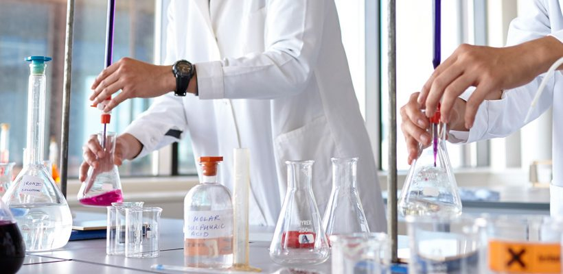

Key Aspects of Humanities & Science Department:
The department lays the groundwork for engineering students by providing them with the necessary knowledge in basic sciences and mathematics.

Interdisciplinary Approach:
It integrates science and humanities, offering a holistic view and fostering interdisciplinary thinking.
It integrates science and humanities, offering a holistic view and fostering interdisciplinary thinking.
Skill Development:
It focuses on developing essential skills like communication, problem-solving, critical thinking.
It focuses on developing essential skills like communication, problem-solving, critical thinking.
Curriculum:
The curriculum typically includes subjects like Mathematics, Physics, Chemistry, English, and sometimes courses.
The curriculum typically includes subjects like Mathematics, Physics, Chemistry, English, and sometimes courses.
Faculty:
It often comprises dedicated faculty members with expertise in various scientific and humanities disciplines.
It often comprises dedicated faculty members with expertise in various scientific and humanities disciplines.